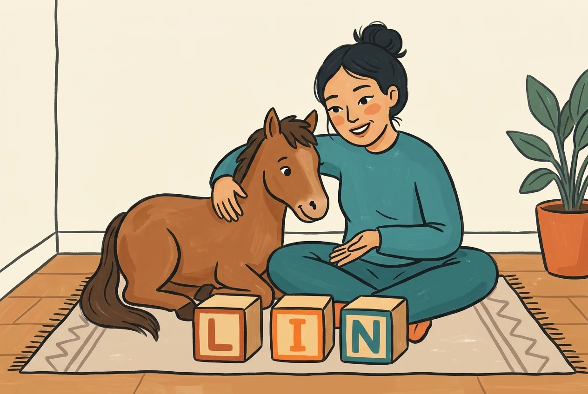
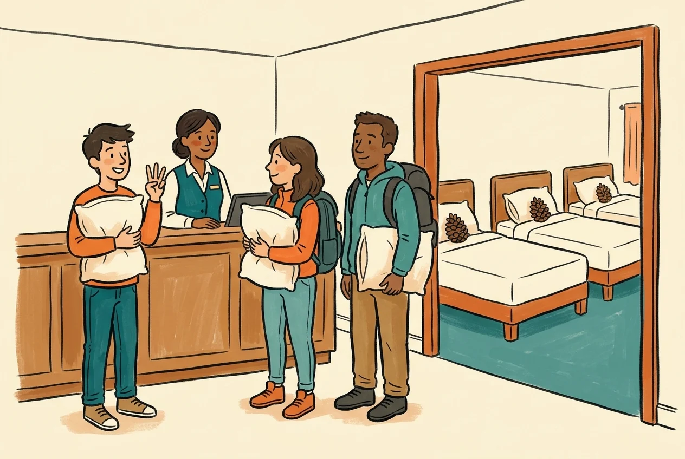
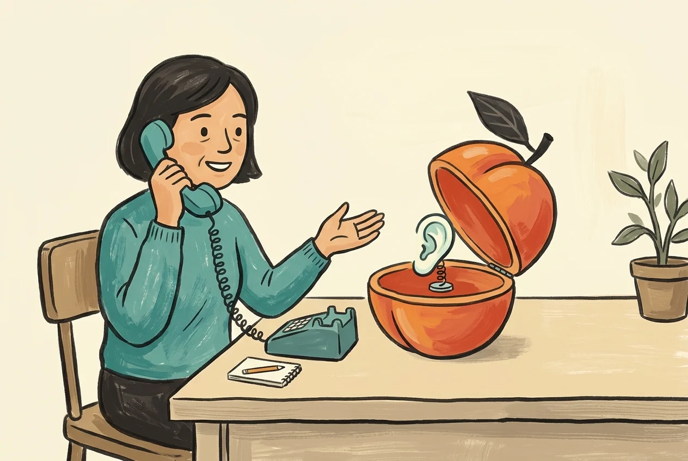

FEI：TCF Canada 总览 ↗
第一次备考先看四项组成、任务说明和准备建议。把口语与写作的任务逐项列出来，再选择对应训练。
适用：Canada。官网正文通过网页阅读服务核验，直接自动访问受到站点防护。
TCF CANADA · UN PETIT PAS, CHAQUE JOUR
TCF Canada 备考，从认识考试、找到资料，到听懂、开口、读懂和写清楚。每份资料都告诉你：适合练什么，接下来怎么做。
资料核验：2026-10-27 · 官方来源与原创练习分别标明
TCF Canada 是四项必考，合计 2 小时 47 分钟。以下按 FEI 的 TCF Canada 考试说明整理；报名与具体安排回官方及考点核实。
原始资料在机构网站打开，可能需要联网、允许脚本或下载 PDF。本站提供中文导航与练习建议；公开页面没有打包第三方题库或音频。
第一次备考先看四项组成、任务说明和准备建议。把口语与写作的任务逐项列出来，再选择对应训练。
适用：Canada。官网正文通过网页阅读服务核验，直接自动访问受到站点防护。
从总览页提供的手册入口，查 TCF Canada 专节与考场流程。读共通规则时，再确认是否有 Canada 的单独说明。
适用：手册涵盖多个 TCF 版本。已核实官方链接；本轮未逐页复核整本手册。
按听力、阅读、口语、写作找样题。下载表达任务时，选择标明 TCF TP / CANADA / QUÉBEC 的文件。
样题用于熟悉任务，不等于完整历年题库。页面也提供 IRN 样题，选择时留意版本。
先从一组听力题开始，答完再回看误解处。记录是关键词没听见、数字没辨清，还是没抓住说话意图。
适用：通用 TCF 听力辅助。官方主页提供免费训练；本轮核实入口，未逐题作答。若嵌入练习无法加载，可从 TCF 主页重新进入。
先定位题目问什么，再在原文找依据。复盘时留下一句证据和一个错选原因，而不是只记答案字母。
适用：通用 TCF 阅读辅助，成绩不能直接换算成 Canada 正式成绩。练习加载异常时回 TCF 主页。
进入后查找 TCF 听力训练，作为第二个听力来源；从短材料开始，做完再解释一处听错的原因。
核验范围：FEI Canada 页面推荐此入口。本轮未独立读取 RFI 正文，不承诺现有题量、具体栏目或所有地区都能访问。
从 FEI Canada 总览的考前流程入口核对考试说明；再结合自己考点的通知准备材料和到场安排。
本轮核实官方链接，未逐条复核流程正文。时间、费用与当地操作以报名考点通知为准。
延续 Oxford 起飞的“声音钩子 + 小画面”：先听准确法语，看图理解，再藏起答案自己说，最后揭晓回听。下面三组保留了原课的原图、原句与提示。

Je m’appelle Lin. Ça s’écrit L-I-N.
我叫林，拼作L-I-N。
声音钩子：热，马佩儿，Lin林；撒，塞克里，L-I-N。
脑内电影：我抱着小马介绍自己叫林，再把L、I、N三块积木按顺序摆好；小马一边点头，一边看清名字怎么拼。
把 Lin 换成自己的名字，再拼一次；继续用两句介绍住处和工作。
回 Oxford T05 继续练习 →
Nous voudrions une chambre pour trois personnes.
我们想要一间三人房。
声音钩子：努，乌德里翁，une，香布儿，普儿，特鲁瓦，佩儿松。
脑内电影：我们三个人抱着枕头到前台，想要一间三人房；房内三张香香的小床排好，每张都躺着一只松果玩偶。
先说原句，再把三人换成两人；接着自己提出一个询问价格的问题。
回 Oxford T09 继续练习 →
Je voudrais laisser un message.
我想留个口信。
声音钩子：热，乌德雷，莱塞，un，梅萨日。
脑内电影：我想留个口信，拿起电话对着梅子录音盒准备说话；盒子打开小耳朵等着，还没录下我的消息。
先练留口信，再尝试说明来电目的、自己的联系方式和方便回电的时间。
回 Oxford T21 继续练习 →近音提示帮助联想，准确发音仍需回听法语；不按汉字声调逐字念。稍后或隔天再看图说一次，试着换成自己的信息。
以下是本站原创练习建议。任务形式以 FEI 官方说明为准，具体题目使用官方样题。
复听是训练步骤；正式考试的播放规则请按 FEI 说明执行。
设备慢读用于核对词句；口语任务还需要连续表达与真实互动。
保留初稿与修改稿，方便看见错误如何被修正；不同任务的要求分别核对。
这是可调整的起步安排，不是固定冲分周期。基础不足时，回学习库补课；已有基础时，把更多时间给官方任务。
读考试总览，打开官方样题，把四项各自要做的事写下来。做一次基础尝试，记录最卡的一项。
每次选一个来源，写下错因和依据。先修一类错误，不追求收集更多链接。
看图说三句，再做一项官方口语任务；写一项官方写作任务，保存录音和初稿供复盘。
藏起旧答案重做，比较原记录。下周优先练仍然说不出或解释不清的任务，换一个情景再试。